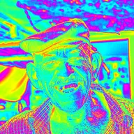

Spectrumkaart

Kleurt het beeld op helderheid opnieuw met een spectrum van drie kleuren. Herhalen loopt het vaker door, Fase verschuift het en Knijpen maakt elke band breder.
Instellingen
| Instelling | Type | Bereik | Standaard |
|---|---|---|---|
| Fase | Getal | -99 tot 99 | 0 |
| Herhaling | Getal | 0.1 tot 10 | 1 |
| Alfa | Getal | 0 tot 1 | 1 |
| Samendrukken | Getal | 0 tot 1 | 0 |
| Verzadiging | Getal | -1 tot 1 | 0 |
| Kleur 1 | Kleur | – | #FF0000 |
| Kleur 2 | Kleur | – | #00FF00 |
| Kleur 3 | Kleur | – | #0000FF |
| Omkeren | Aan of uit | – | Uit |
| Helderheid schalen | Aan of uit | – | Uit |